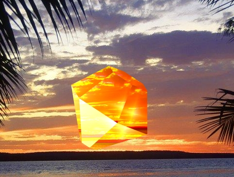
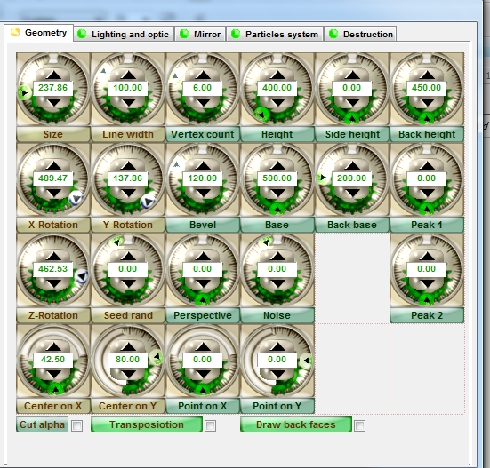

Плагин Panopticum LensPro 3.0 (Часть 2)
Плагин Panopticum LensPro 3.0 (Часть 1)
Продолжение урока о плагине Panopticum LensPro 3.0.
Примечание: нумерация рисунков сквозная, т. е. рис. 1, например, находится в Части 1 урока об этом плагине.
Pyramid N-gon Crystal (Кристалл N-угольная пирамида)
Pyramid N-gon Crystal (Кристалл N-угольная пирамида) - 3-D кристалл в форме полигональной пирамиды. Кристаллы могут быть преобразованы и повернуты.
Geometry Parametrs (Геометрические параметры) Кристалла N-угольная пирамида:
Vertex Count (Количество вершин) - корректирует число вершин.
Size (Размер) - корректирует размер кристалла.
Height (Высота) - корректирует высоту кристалла.
Base (Основание) - определяет размер основных граней кристалла.
Peak 1 (Пик 1) - устанавливает высоту дополнительного пика, сформированного из грани первого основания кристалла.
X-Rotation - корректирует вращение линзы по оси X.
Y-Rotation - корректирует вращение линзы по оси Y.
Z- Rotation - корректирует вращение линзы по оси Z.
Pyramid N-gon and Back Crystal (Кристалл N-угольная Обратная пирамида)
Pyramid N-gon and Back Crystal (Кристалл N-угольная Обратная пирамида) - создает 3-D кристаллы в форме двух полигональных пирамид, растущих в различных направлениях от их общей основы. Кристаллы могут быть преобразованы и повернуты.
Geometry Parametrs (Геометрические параметры) Кристалла N-угольная Обратная пирамида:
Vertex Count (Количество вершин) - корректирует число вершин.
Size (Размер) - корректирует размер кристалла.
Height (Высота) - корректирует высоту кристалла.
Height of Back (Высота Обратной стороны) - определяет высоту обратной стороны граней кристалла
Base (Основание) - определяет размер основных граней кристалла.
Base of Back (Основание Обратной стороны) - определяет размер второго основания кристалла.
Peak 1 (Пик 1) - устанавливает высоту дополнительного пика, сформированного из грани первого основания кристалла.
X-Rotation - корректирует вращение линзы по оси X.
Y-Rotation - корректирует вращение линзы по оси Y.
Z- Rotation - корректирует вращение линзы по оси Z.
Diamond Crystal (Алмазный Кристалл)

Diamond Crystal (Алмазный Кристалл) - 3-D кристалл в форме обрезанного алмаза. Пользователь может определить количество граней, расстояние между центром и границей, и тип обрезки граней (Рис. 18).
Geometry Parametrs (Геометрические параметры) Алмазного кристалла (Рис. 19):

Сравните страницу Geometry Parametrs (Геометрические параметры) для Ellipse Lens (Эллиптической Линзы) на рис. 4 и Diamond Crystal (Алмазного Кристалла) на рис. 19. Количество доступных параметров намного больше, о чем было сказано в начале урока (в Части 1).
Size (Размер) - корректирует размер кристалла.
Height (Высота) - корректирует высоту кристалла.
Height of Side (Высота Стороны) - определяет высоту боковых граней.
Height of Back (Высота Обратной стороны) - определяет высоту обратной стороны. Base (Основание) - определяет размер основных граней кристалла.
Base of Back (Основание Обратной стороны) - определяет размер второго основания кристалла.
Peak 1 (Пик 1) - устанавливает высоту дополнительного пика, сформированного из грани первого основания кристалла.
Peak 2 (Пик 2) - устанавливает высоту дополнительного пика, сформированного из грани второго основания кристалла.
Bevel (Скос) - настройка скоса углов кристалла.
X-Rotation - корректирует вращение линзы по оси X.
Y-Rotation - корректирует вращение линзы по оси Y.
Z- Rotation - корректирует вращение линзы по оси Z.
Star Crystal (Звездообразный Кристалл)
Star Crystal (Звездообразный Кристалл) - 3-D кристалл в форме полигонального кристалла. Его грани и вершины могут преобразовать кристалл в звезду. Пользователь может определить количество граней, расстояние между центром и границей и тип среза граней.
Geometry Parametrs (Геометрические параметры) Звездообразного Кристалла:
Size (Размер) - корректирует размер кристалла.
Height (Высота) - корректирует высоту кристалла.
Base (Основание) - определяет размер основных граней кристалла.
Peak 1 (Пик 1) - устанавливает высоту дополнительного пика, сформированного из грани первого основания кристалла.
Bevel (Скос) - настройка скоса углов кристалла.
X-Rotation - корректирует вращение линзы по оси X.
Y-Rotation - корректирует вращение линзы по оси Y.
Z- Rotation - корректирует вращение линзы по оси Z.
Resolit Crystal (Кристалл Резолит)
Resolit Crystal (Кристалл Резолит) 3-D кристалл в форме кубика с вырезанным геометрическим орнаментом. Пользователь может получить много необычных кристаллов, корректируя его параметры. Вершины и грани кристалла могут быть легко преобразованы пользователем.
Geometry Parametrs (Геометрические параметры) кристалла Резолит:
Size (Размер) - корректирует размер кристалла.
Height of Side (Высота Стороны) - определяет высоту боковых граней.
Base (Основание) - определяет размер основных граней кристалла.
Peak 1 (Пик 1) - устанавливает высоту дополнительного пика, сформированного из грани первого основания кристалла.
Peak 2 (Пик 2) - устанавливает высоту дополнительного пика, сформированного из грани второго основания кристалла.
X-Rotation - корректирует вращение линзы по оси X.
Y-Rotation - корректирует вращение линзы по оси Y.
Z- Rotation - корректирует вращение линзы по оси Z.
Tetrahexahedron Crystal (Кристалл Кубический шестигранник)
Tetrahexahedron Crystal (Кристалл Кубический шестигранник) - создает 3-D кристалл в форме кубика с дополнительными вершинами в центре его граней. Вершины и грани кристалла могут быть легко преобразованы пользователем. Можно определить число граней, расстояние между центром и границей и обрезку граней.
Geometry Parametrs (Геометрические параметры) Кристалла Кубический шестигранник:
Size (Размер) - корректирует размер кристалла.
Peak 1 (Пик 1) - устанавливает высоту дополнительного пика, сформированного из грани первого основания кристалла.
X-Rotation - корректирует вращение линзы по оси X.
Y-Rotation - корректирует вращение линзы по оси Y.
Z- Rotation - корректирует вращение линзы по оси Z.
Hexoctahedron Crystal (Кристалл Гексаоктаэдр)
Hexoctahedron Crystal (Кристалл Гексаоктаэдр) - 3-D кристалл в форме кубика с дополнительными вершинами в центре его исходных граней и сторон. Вершины и грани кристалла могут быть легко преобразованы пользователем. Кроме того, пользователь может установить расстояние между центром и границей, и тип обрезки граней.
Geometry Parametrs (Геометрические параметры) Кристалла Гексаоктаэдр:
Size (Размер) - корректирует размер кристалла.
Peak 1 (Пик 1) - устанавливает высоту дополнительного пика, сформированного из грани первого основания кристалла.
Peak 2 (Пик 2) - устанавливает высоту дополнительного пика, сформированного из грани второго основания кристалла.
X-Rotation - корректирует вращение линзы по оси X.
Y-Rotation - корректирует вращение линзы по оси Y.
Z- Rotation - корректирует вращение линзы по оси Z.
3-D объекты Panopticum
Panopticum LensPro – пакет, который поможет Вам в создании стеклянных объектов любой формы. Чтобы сделать 3-D кристалл, можно выбрать любой файл 3DS стандарта VRML и указать там объекты, которые должны использоваться в качестве стеклянных объектов. Кнопка Load 3D (Загрузить 3-D) на странице Geometry (Геометрия), станет доступной после того, как Вы выберете пункт 3D Object (3-D Объект) в списке Object Type (Тип Объекта). Щелчок по этой кнопке вызовет диалоговое окно для выбора 3-D файлов.
Panopticum Lens Pro III включает небольшую библиотеку файлов с объектами различных форм. Можно создать свои собственные такие же файлы или загрузить их из Интернета.
Диалоговое окно выбора файлов очень простое в работе. В верхнем правом углу находится окно предварительного просмотра, где можно увидеть, какие фигуры содержатся в выбранном файле. С помощью элементов управления Show Preview (Показывать предварительный просмотр) и Rotate Axis (Оси вращения), можно управлять предварительным просмотром. Используя элементы управления Normalize Axis (Нормализовать Оси) и MiniMax Center, можно адаптировать фигуры файла для дальнейшего использования.
Список всех 3-D объектов файла создается в левом нижнем углу диалогового окна. Чтобы выбрать фигуры, необходимые Вам, можете использовать кнопки Select All (Выделить Все), Deselect All (Отменить выделение) и Invert Selection (Инвертировать Выделение). После того, как Вы выбрали файл, щелкните «OK», чтобы увидеть кристалл в форме фигуры из файла.
Panopticum Triangles
Panopticum Triangles - этот плагин позволяет Вам представлять любое изображение как набор треугольников. В отличие от Panopticun 3D Object, Panopticum Triangles создают автоматически 3-D модель любой плоской маски. Пользователь может перемещать, вращать, разбивать на части или сформировать 3-D модель. Свойства материала, из которого делается модель, могут также быть скорректированы. Например, если это стеклянная модель, пользователь может определить оптические свойства стекла, такие как коэффициент преломления, хроматическая аберрация, цвет, и т.д. Есть возможность подсветить 3-D модели с помощью различных источников света. Пользователь может также использовать Refraction Map (Карту Преломления). У каждого треугольника, составляющего модель, могут быть различный цвет и его собственная интенсивность блеска. Корректировка дисперсии цветов и блеска на треугольниках поможет Вам сделать великолепные эффекты вместе с многими другими элементами Вашей 3-D модели.
Применение Panopticum Triangles к Вашему изображению приведет к представлению Вашего изображения с помощью набора треугольников. Если Вы хотите, чтобы треугольники сформировали особое изображение, например, надпись или контур, только укажите соответствующий слой, содержащий необходимую маску. Любое непрозрачное изображение на прозрачном фоне может служить маской.
Список Triangles Shape (Форма треугольников) содержит параметры, для настройки вида 3-D модели.
Shape Source Layer (Слой Исходной Формы) - позволяет Вам определить маску изображения;
Need Skeleton (Нужен Каркас) - определяет, должна ли Ваша модель иметь или не иметь центральную линию - линию, которая проходит через центр контура и на которой сходятся все вершины треугольников.
Border Roughness (Шероховатость границы) - указывает точность соответствия границ модели с таковым из исходной маски.
Density (Плотность) - определяет количество треугольников.
Scale Z (Масштаб по Z) - определяет 3-D рельеф модели. Значение параметров равное 0 дает плоскую модель. Уровень рельефа модели прямо пропорционален значению этого параметра.
Все другие параметры идентичны с таковыми в Panopticum 3D Object.
Selection Area (Выделенная Область)
Если Вы выберете пункт Selection Area (Выделенная Область) в списке Object Type (Тип Объекта), то Вы сможете создать стеклянные поверхности любой формы. Выберите некоторую область в изображении, согласно которому будет изображена стеклянная поверхность. У этого типа линзы нет никаких специальных параметров для корректировки формы. Появление и расположение линзы определяются выбранной областью.
На этом рассмотрение страницы Geometry (Геометрия), можно считать оконченным.
Продолжение рассказа о данном плагине будет в следующих частях.
Интересно! Спасибо
Чуть позже выложу остальную часть урока. В этом плагине есть еще много интересных эффектов (настроек), которые не описаны в этих 2-х частях